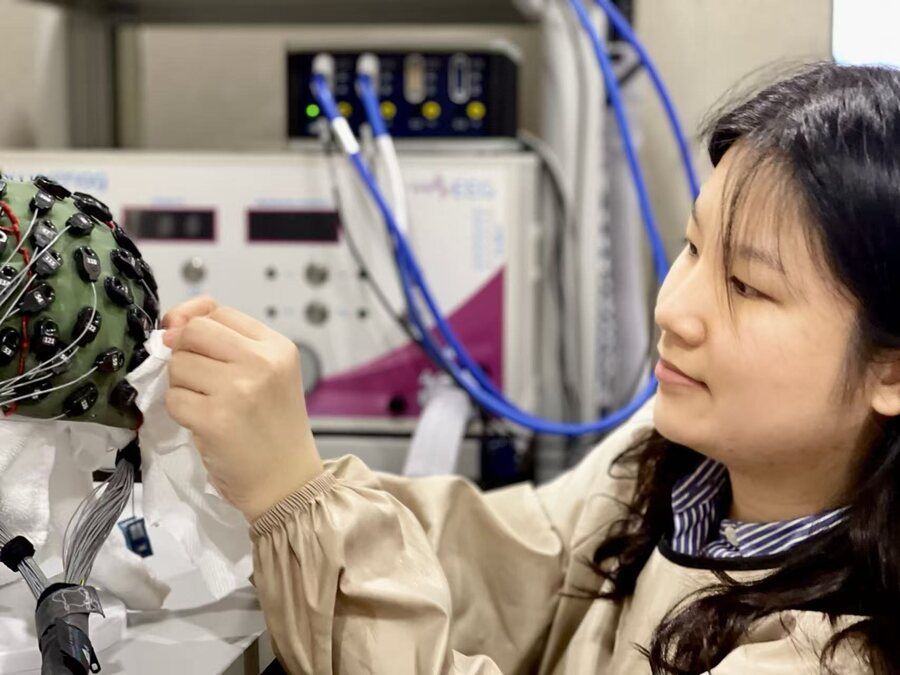

National Scholarship
2021–2022 · RMB 10,000
PhD Researcher · Hong Kong
I study how people understand language and social partners, focusing on human–AI interaction, psycholinguistics, and cognitive neuroscience.
Member of the Language Processing Lab, CUHK.

Awards & Scholarships
2021–2022 · RMB 10,000
2021–2022 · RMB 10,000
2024–2028 · HKD 900,000
Research
How beliefs about an AI partner shape language processing, humor, and social connection.
Sentence processing, irony, ambiguity resolution, and inhibitory control in bilingual speakers.
EEG, fNIRS, hyperscanning, behavioural experiments, RSA, and machine learning.
Education
2024–2028 · PhD in Linguistics
The Chinese University of Hong Kong, Hong Kong
2023–2024 · MA in Linguistics
The Chinese University of Hong Kong, Hong Kong
2019–2023 · BA in Linguistics
Guangdong University of Foreign Studies, Guangzhou
Publications
Conference presentations
Academic service
Ad hoc reviewer for Journal of Psycholinguistic Research and Language, Cognition and Neuroscience.
Visiting research
I will be a visiting researcher at the University of Edinburgh from January to August 2027, hosted by Professor Holly Branigan.
Funded research
General Research Fund (14601525), 2026–2028.
General Research Fund (14600220), 2021–2023.